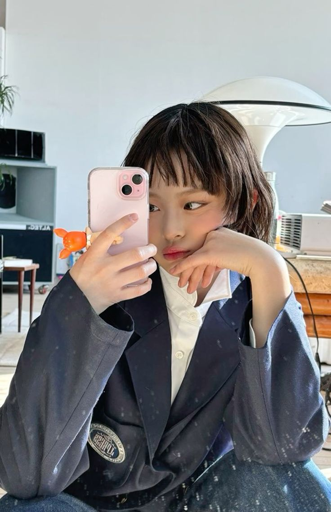
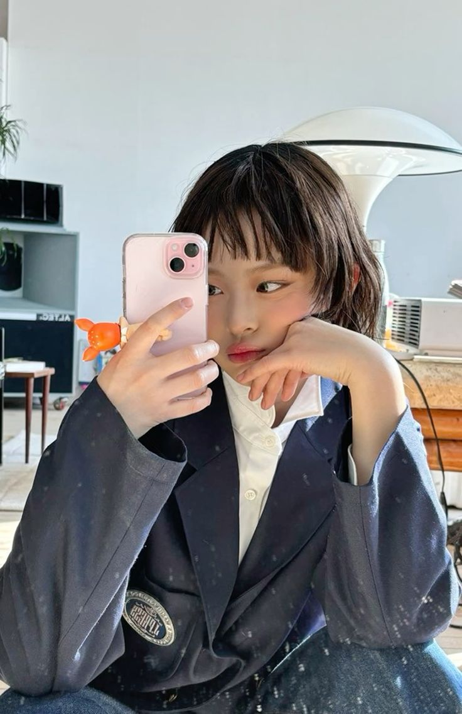
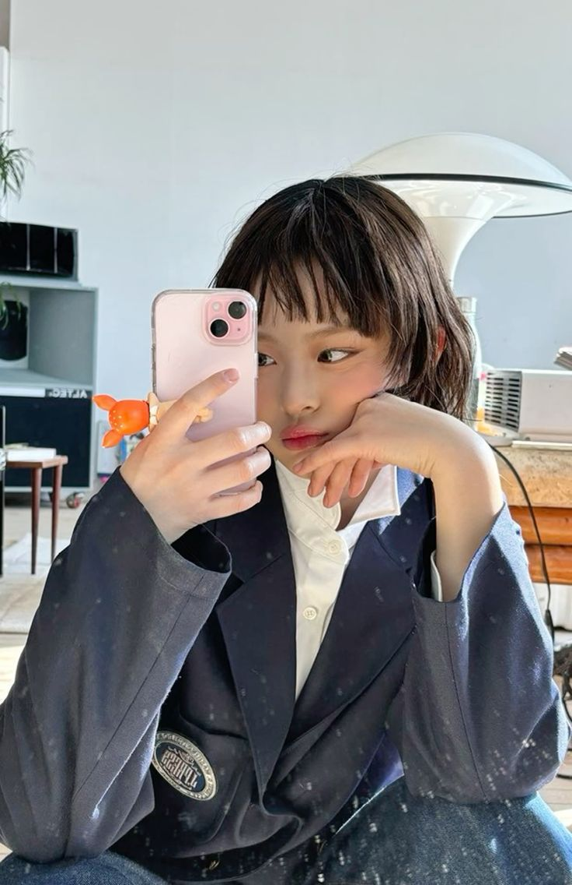

Welcome Bunnies!! Di website ini, kamu akan menemukan informasi terkini tentang Hanni Pham NewJeans.
Bunnies akan mendapatkan fakta-fakta unik tentang Hanni yang mungkin belum kamu tahu.
Ayo, ikuti selalu perjalanan seru Hanni dan member NewJeans bersama-sama!

Hanni Pham
Lahir pada 6 Oktober 2004, di Melbourne, Victoria, Australia.
Ia berasal dari keluarga keturunan Vietnam yang kaya akan budaya. Sejak kecil, Hanni adalah penggemar
One Direction, dengan Niall Horan sebagai biasnya.
Pada tahun 2019, Hanni bergabung dengan grup cover dance K-pop Australia bernama
AEMINA. Ia lulus Audisi Global Plus dan menjadi trainee di tahun 2020.
Perjalanan Karir
2021:Penampilan dalam MV BTS berjudul "Permission to Dance".
Hanni muncul dalam peran kecil bersama calon anggota NewJeans, Minji.
2022:Debut resmi. Hanni diperkenalkan sebagai anggota girl grup baru ADOR, NewJeans, pada 21 Juli 2022.
Fun Fact
Hanni adalah idol Australia-Vietnam pertama yang debut di bawah HYBE Labels.
Ia memegang sabuk hitam tingkat 2 di taekwondo dan berlatih di dojo milik kakeknya.
Hanni dapat melakukan tendangan depan sambil melompat dengan kaki kanan sebagai kaki penendang.
Jika tidak menjadi idol, ia lebih memilih untuk mengambil jurusan sains dan kedokteran
atau filmografi jika melanjutkan pendidikan di universitas.
 
